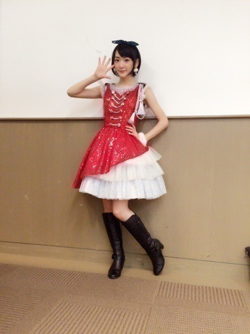
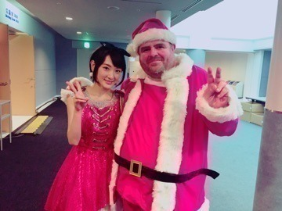
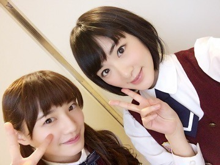

| 2015/12 26 Sat | サンタいたー！ っ て十四松が言ってた やつ可愛かったなぁ❤︎ |
昨日はクリスマス
Mステスーパーライブがありました〜ヽ(・∀・)ノ
今年も参加出来てとても嬉しかったですヽ(・∀・)ノ！！
豪華なアーティストの皆さんを自分たちの出番が終わってから、楽屋でみんなわいわい見ながら素敵なクリスマスを過ごす事が出来ました〜ヽ(・∀・)ノ
しかも冬なのに
太陽ノックを歌わせて頂きました！
久しぶりにセンターに立ったのでめちゃくちゃ緊張しました(´；ω；｀)ドキドキ

貴重な体験でしたっ！！

サンタさん風の衣装ヽ(・∀・)ノ
寒い冬を元気に出来たかなって思います！
久しぶりに楽しいクリスマスヽ(・∀・)ノ

だるだるイングリッシュ以来

ダルさんに会えたよ〜ヽ(・∀・)ノヽ(・∀・)ノヽ(・∀・)ノヽ(・∀・)ノ
ダルサンタさんかわいいねっ
サンタさんにも会えて、楽しいクリスマスになりましたヽ(・∀・)ノ
皆さんはどんなクリスマスでしたか？
そして今日は
名古屋にて13枚目シングルの全国握手会がありました〜ヽ(・∀・)ノ
ペアはかなりん

結構ペアになる率高し。
皆さん紅白歌合戦頑張れ〜とか
MV集見たよ〜
とかとか
コープスパーティー買ったよ〜
とかとか
直接お話し聞けて嬉しかったし、充実した時間になりました〜ヽ(・∀・)ノ

明日は個別握手会で、生誕祭がありますので来てくださる方はよろしくお願いします！
夜はらじらー！サンデーもありますし！
充実した１日になりますようにっ♬
へばなっ☆彡
コメント(590)
2015/12/26 20:40